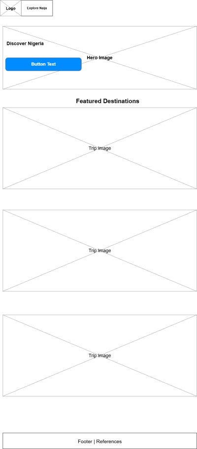
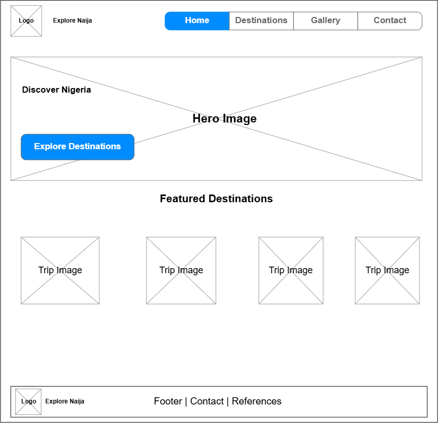

Site Name
Explore Naija
Explore Naija is a tourism information website dedicated to showcasing the beautiful tourist attractions, natural wonders, cultural heritage, and exciting destinations across Nigeria.
The name combines "Explore," which encourages visitors to discover new places, and "Naija," a popular informal name for Nigeria. I chose this name because it is memorable, relevant to Nigerian tourism, and easy for visitors to recognize.
Proposed domain: explore-naija.com
Logo concept: A globe representing exploration, combined with the name Explore Naija.
Site Purpose
The purpose of Explore Naija is to provide visitors with useful information about tourist attractions across Nigeria. The website will help users discover destinations, learn about their features, and explore places they may want to visit.
The website will provide:
- Information about popular Nigerian tourist destinations.
- Descriptions of natural attractions and cultural landmarks.
- Destination categories to make browsing easier.
- Images and interesting facts about selected locations.
- A trip-planning form for visitors to express their interests.
- A favourites feature that allows visitors to save destinations.
Scenarios
These are questions that visitors may ask when using the website:
- What are some beautiful tourist attractions I can visit in Nigeria?
- Where can I find information about waterfalls, beaches, and national parks in Nigeria?
- What makes a particular Nigerian tourist destination special?
- How can I save my favourite destinations for future reference?
- How can I submit my travel interests through the website?
Color Schema
The website will use a nature-inspired color scheme that reflects Nigeria's natural attractions and creates a welcoming experience.
Deep Green
#003D32
Used for the header, navigation, footer, and primary headings.
Fresh Green
#009B55
Used for buttons, highlights, and decorative accents.
Cream
#F5F3EA
Used for the main background, destination cards, and content sections.
Dark Teal
#123C35
Used for general content, card titles, and secondary headings.
Typography
Poppins - Headings
Poppins will be used for the main headings, section titles, navigation highlights, and important labels. It provides a modern and clear appearance.
Roboto - Body Text
Roboto will be used for paragraphs, descriptions, form labels, and general website content because it is readable and suitable for longer text.
Wireframes
The following wireframes illustrate the proposed homepage layout for mobile and desktop screens.
Mobile View

Desktop View

Website Pages
Home Page - index.html
Introduces Explore Naija, highlights selected destinations, and provides navigation to other website pages.
Destinations Page - destinations.html
Displays Nigerian tourist attractions using destination cards. Visitors will be able to browse and filter destinations by category.
Plan Your Trip Page - plan.html
Provides a form where visitors can submit their names, email addresses, preferred destinations, and travel interests.
References Page - references.html
Lists the sources of images and external information used throughout the website.
JavaScript Functionality
JavaScript will make the website interactive and demonstrate the concepts learned in WDD 131.
- Use arrays of destination objects to store information.
- Use array methods to display and filter destinations.
- Use DOM selection and manipulation to update website content.
- Use event listeners to respond to visitor interactions.
- Use conditional statements to control website behaviour.
- Use template literals to generate dynamic HTML content.
- Use localStorage to save visitors' favourite destinations.
- Use multiple functions to organize the JavaScript code.
Responsive Design
The website will use responsive CSS techniques to support mobile phones, tablets, and desktop computers. CSS Grid, Flexbox, and media queries will be used to create flexible layouts.